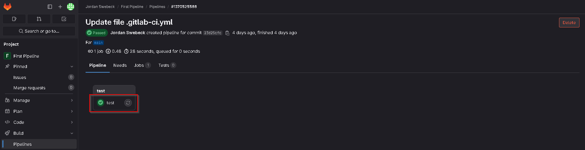
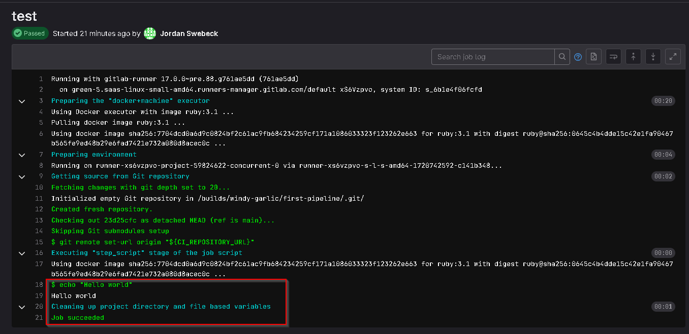
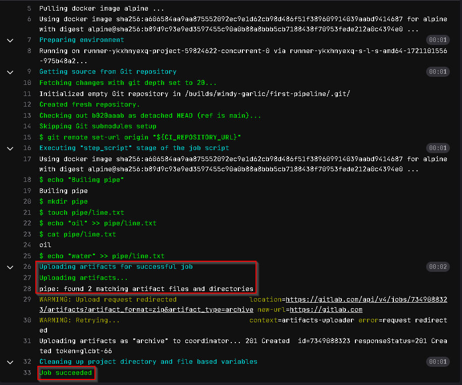
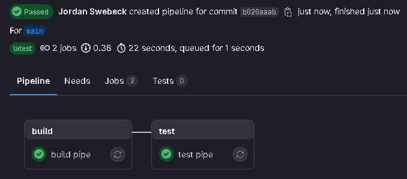

Prerequisites
Not necessary, but it will help
- Basic Bash Knowledge
- Basic Understanding of YAML
- Experience With Git is a Plus
Intro
What is a CI/CD pipeline? A CI/CD pipeline automates the integration, testing, and deployment of code changes. Continuous Integration (CI) ensures code changes are automatically tested and merged into a central repository. Continuous Deployment (CD) automates the release of code to production, making deployments fast and reliable.
That is the technical way of saying 'Do some things when I push code.' Often, CI checks ensure the new code that has been pushed doesn't break existing functionality. Continuous Integration (CI) involves automatically testing and validating code changes before merging them into the main branch. For our end goal, we will be focusing more on Continuous Deployment (CD), which is essentially 'automatically send my tested code to the live environment.' But for this example, let's first learn about the CI side.
Hello World
So lets get started. First things first, lets get familiar with GitLab, as that is where I will be building the CI/CD pipeline. Most of my experience so far with Git has been with GitHub.
So after making an account with GitLab and failing the captcha a few times (They are getting ridiculous). I have created a repo called First Pipeline.
And here we go, our first pipeline. This is just a hello world script, and doesn't really do anything, but we will use it to make sure everything is working so far. There are a few things to keep in mind if we want this to work.
- The file must be called ".gitlab-ci.yml"
- This is a yaml file, proper whitespace is very important when it comes to .yml files. (If you struggle with this you might benefit from a linter that can check your format for you).
Once we have verified our account, and committed the file, it should run automatically, we can then go to the repo on GitLab, click build, then pipeline in the left hand tab. Once there, we will click on the commit hash of our pipeline.
We then want to click the green tick.
Once there, we can see the logs for our pipeline, and we see that the pipeline script was executed. If we look further up, we can see that it is utilizing docker to do this.
Creating Our First Pipeline
If this is all working, and if you have some experience with Bash, you should be in a good position to start experimenting with pipelines.
build pipe:
image: alpine
stage: build
script:
- echo "Builing pipe"
- mkdir pipe
- touch pipe/line.txt
- echo "oil" >> pipe/line.txt
- cat pipe/line.txt
- echo "water" >> pipe/line.txt
Lets start by creating a simple example job. We call it build pipe, then specify the docker image we want to use. If your aren't familiar, Alpine is a light weight Linux distro. I will cover stage later, next we start writing our script. This will simply make a directory, and a text file in the directory, then it will add the two lines of text to the file.
test pipe:
image: alpine
stage: test
script:
- test -f pipe/line.txt
We can now add a new blob to the YAML file. This script will check for the existence of the specified file.
If we were to run this pipeline right now it would fail. That's because both of the scripts will run concurrently meaning the file wont be created by the time it is checked.
stages: - build - test
To remedy this we can add this stages key to the top of our YAML file. This will run the jobs in stages.
If you were to run this, it would still fail and that's because once the first job is done it will close down the container, and start a new one for the next job. So we need to retain the information between container. To do that we can use artifacts.
stages:
- build
- test
build pipe:
image: alpine
stage: build
script:
- echo "Builing pipe"
- mkdir pipe
- touch pipe/line.txt
- echo "oil" >> pipe/line.txt
- cat pipe/line.txt
- echo "water" >> pipe/line.txt
artifacts:
paths:
- pipe
test pipe:
image: alpine
stage: test
script:
- test -f pipe/line.txt
This is what our final pipeline should look like. We have added the artifacts key, which contains paths, and the directory called pipe that we created at the start. This will save everything inside the folder. We will now commit our changes and see if it worked.
 We now have both jobs passing!
Conclusion
This has been a brief introduction to GitLab Pipelines at a beginner level, just enough to get you started. I encourage you to experiment further and discover for yourself how powerful and versatile pipelines can be.
A CI/CD pipeline isn't just about automation, it's a systematic approach to ensuring code quality and reliability throughout the development lifecycle. By incorporating security practices directly into the development pipeline, CI/CD not only accelerates software delivery but also strengthens defenses against cyber threats.
Embracing DevSecOps principles and integrating security into every phase of development is crucial for building robust, secure software solutions. By doing so, we can make sure that security is a core part of the development process.
Learning Material
FreeCodeCamp Youtube Video -DevOps with GitLab CI Course - Build Pipelines and Deploy to AWS:
If you're interested in learning more about DevSecOps, here are some resources:
github.com/6mile/DevSecOps-Playbookgithub.com/chughes29/Cloud-DevSecOps-Learning